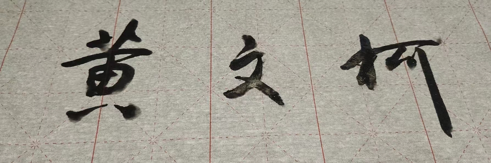

Wenke Huang (黄文柯)

Chinese name 👆 written by my handsome Dad.
Reserach Fellow
Nanyang Technological University
Email:
wenkehuang0901@gmail.com
[Google Scholar]
[LinkedIn]
[Github]

Wenke Huang (黄文柯) Chinese name 👆 written by my handsome Dad. Reserach Fellow
Nanyang Technological University |
|
I am a Research Fellow at Nanyang Technological University, working with Prof. Dacheng Tao.
I received Ph.D. degree and B.S. degree (Software Engineering and Finance) from Wuhan University in 2025 and 2021, advised by Prof. Mang Ye and Prof. Bo Du.
My research focuses on Federated Learning and Multimodal Large Language Models: Romance Never Dies.
|
- Reviewer for CVPR, NeurIPS, ICML, ICCV, ICLR, AAAI, IJCAI, ACMMM, ACL, AISTATS, ECCV, ...
- Reviewer for IEEE-(TPAMI, TIFS, TKDE, TPDS, TNNLS, TNET, TMI, TIM, TCSVT), ACM-(CSUR, TKDD), Scientific Reports, Neural Networks, ... - Outstanding Reviewer, CVPR, 2025 |
12/2025 大，是用来描述毛泽东的术语，在各个方面偶是如此。他总是确立政策、理论的要点，把具体的细节留给行政人员去决定。作为个人，他从不刻薄小气，自私自利，或者打击报复。这在中国是一种革命的品质。他是一个成功者，他深深喜欢成功的全过程。成功对他来说，主要是指赢得人心。据目前所知，他从来没处决过他的敌手。同法国革命、苏联革命相比，这是一种进步，是迈向文明的显著进步。--《毛泽东自述》
11/2025 世上有两种东西不可直视，一是太阳，二是人心。--《白夜行》
10/2025 我对别人的评价和嘲讽没那么敏感，甚至有点迟钝，别人对我的评价影响不大，我只关心自己进步了没有。--《钝感力》
09/2025 还有，你要远离竞争，工作和社交不是拿来攀比的。比如年轻时因为别人都结婚而焦虑的人，只要不在意就可以幸福生活。而反过来，哪怕你活的跟别人一样，如果不合你的心意，那也没有意义。不与人无畏地竞争，不问成败，只做喜欢的工作，这就是你现在能做的。 --《你们聊我听听》
08/2025 假如权利的界定不能由权力者任意定夺，就说明该社会的权力操作是在制度的规范中运行的，而官员也就成为制度的执行者，而非弄权者。这样的社会自然也不就不会成为一个官本位的社会。钱穆说：”中国人称‘权’，乃至权度、权量、权衡之意，此乃各官职在自己心上斟酌，非属外力之争。 --《人情、面子与权利的再生产》
07/2025臣闻古之君子，交绝不出恶声；忠臣去国，不絜其名。 --《史记·乐毅列传》
06/2025 如果你尝试用一幅图来描绘人们的幸福/效用背后的所有影响因素，并预测人们的选择，那注定无法成功，因为如此多的因素注定无法用一幅图画来描绘。不论用期望效用理论还是用前景理论来描绘都是如此。然而，两种理论都捕捉到了一些人们的幸福和选择背后的重要因素。 --《行为金融学通识》
05/2025 一旦到了寒山，烦恼都结束--不再纠结，不再忐忑。我闲散地在崖壁上涂写诗句，接受到来的一切，像一叶不系之舟。 --《砌石与寒山诗》
04/2025 如果你志在追求艺术追求文学，那么去读一读希腊人写的东西好了。因为要诞生真正的艺术，奴隶制度是必不可少的。而古希腊人便是这样：奴隶们耕种，烧饭，划船，而市民们则可以在地中海的阳光下陶醉于吟诗作赋，埋头于数学解析。所谓艺术便是这么一种东西。 --《且听风吟》
03/2025 因为正如赫鲁晓夫所说，一旦互相发射导弹，共产主义的灰烬和资本主义的灰烬将没有什么差别，连最极端的意识形态倡导者也分辨不出来，因为他也已经死了。 在当今这个时代，面对如此多的不确定性，只有一点是确定的：我们要面对“世界是不确定的”这个事实。 -- 《不确定的时代》
12/2024 也许艺术家的目光和心思已在别处。也许他们已经感到需要妥协。成为一名艺术企业家的后果之一是，你会像任何从商的人一样，容易接受权宜的哲学，接受偶尔也要与魔鬼做交易的现实。一旦你与那个尖尾巴的魔鬼从同一把勺子里喝水， 不虚伪就变得极其困难。比如你前一天晚上刚参加过一个时髦的博物馆晚宴，刚好坐在某个投资银行行长的旁边，而他恰巧又是你作品的主要收藏者或客户之一，那你如何创作楚深刻的、发自内心的反资本主义的艺术品呢？再者，当你自己的碳排放量大远大于大部分人时， 你怎么创作出有关环境的作品？你是否能错做出旨在揭露社会不公的绘画和雕塑作品，而你又明显从这个社会中受益？还有，你是否会批判一个你作为核心成员的机构？答案是，你不会。-- 《现代艺术150年》
11/2024 在寸土寸金的江湖里面我参悟人性，桀骜不驯的侠客按照自己的蓝图登顶。 -- 《龙Loong》
10/2024 在这里，我们终于回到我们的出发点。实际上根本没有艺术这回事，只有艺术家，他们是些男男女女，具有惊人的天赋，善于平衡形状和色彩以达到“合适”的效果。 更稀罕的是具有正直性格的人，他们不肯在半途止步，时刻准备放弃所有唾手可得的效果，放弃所有表面上的成功，去踏踏实实地经历工作中的辛劳和痛苦。我们相信永远都会有艺术家诞生。 但是会不会也有艺术？这在同样大的程度上也有赖于我们自己，也就是艺术家的公众。通过我们的冷漠或我们的关心，通过我们的成见或我们的理解，我们还是可以决定事情的结局。 恰恰是我们自己，必须保证传统的命脉不致中断，保证艺术家仍然有机会去丰富那串宝贵的珍珠，那是往昔留给我们的传家之宝。 -- 《艺术的故事》
09/2024 用尽全力飞翔吧，这样当你老了之后在僧庐下听雨的时候，你才有那些走马般的瞬间在脑海中流过，你不会后悔的。你曾经满世界地远行，你要去一个地方，你从未去过，不知道是哪里，但你相信那里很美。 -- 《龙与少年游》
08/2024 在现实世界中，存在着一颗北极星，那是小熊星座中最明亮的恒星。而在思想的世界里，却存在无数个类似的导航指引。每一种新的追求，每一个新的痴迷，都悬挂在黑暗的地平线上，闪烁着耀眼的光芒，向不懈追寻的人们招手致意。这就是为什么我最大的快乐在于知道旅程永远不会结束，我也永远不会停歇。总会有新的事物等着我去追逐探索。对科学家而言，想象力就如同布满北极星的璀璨天空。 -- 《我看见的世界 李飞飞自传》
07/2024 “猎人”和“农夫”之间的关键区别是,“猎人”知道自己想要完成什么，想解决什么问题，想使用什么方法。“猎人”是前瞻主动的。相反，“农夫”被动做出回应，他们的动力来自其他人的工作，他们修正这些工作中的错误或是加以扩展。又或者他们会参加朋友的一些不相关项目，通过这种方式获得发表机会。有时这种区别并不明显，比如，与同事的一次交谈，或对篇重要论文的回应，兴许为他们带来了终生投入的工作。尽管如此，但我认为这就是学者在思考自己研究时的重要区别。 -- 《普林斯顿经济学研究指南》
06/2024 “远离我的欲望”，这是珍妮 霍尔泽在时代广场大屏幕上写下的句子。接下来，人们会读到这样的句子：“过多的欲望是不道德的，滥用权力从来都不是什么新鲜事。’作者认为这些句子都是一些老生常谈的道理，都是人们聊天时经常会说到的。这些有着言外之意的句子，在人流涌动的大都市中慢慢地影响着人们。 -- 《艺术流派鉴赏方法》
05/2024 为了掩盖自己的真实意图，银行家们在讨论中央银行形式时，决定采取地区性储备中心的形式，用“区域性”和“分散性”这个虚假的面纱，向社会表明这似乎是独立的区域中央银行，以掩盖他们青睐并实施 欧洲式中央银行的意图。看上去储备和纸钞的发型“好像是“分散到地区储备银行手中，但事实上”却集中到中央管制委员会手中，并由他们进行协调。 -- 《美联储的起源》
04/2024 但是,尽管这么说，我却觉得我这一生并不空虚；我活得很充实，也很有意思，因为有我们仨。也可说：我们仨都没有虚度此生，因为是我们仨。 -- 《我们仨》
03/2024 我一直认为，在科学研究这一领域，乐观对成功而言同样不可或缺；我遇到的成功的科学家都会夸大他或她正在进行的研究的重要性。我还相信，不爱夸大自己重要性的人在反复面对挫折和失败时会一蹶不振，这种情况也是大多数研究人员的结局。 -- 《思考，快与慢》
02/2024 或许最奇怪的是，库珀、迪米特洛夫和劳发现一些公司的核心业务与互联网无关，却决定更改名字来包含“com”，此类公司在公告宣布的5天之内产生23%的异常汇回报，甚至在将事件窗口扩大至之后60天能观察到140%的异常汇报。这是一个在工作中应用代表性启发的好例子。由此可见，市场能够有效处理的信息就这么点儿。 -- 《行为金融学》
01/2024 奢侈不在于你买得起多少钱的东西。奢侈是中间是，是如何恰如其分地对待它，是要花时间去理解体会它，然后选出好的。奢侈就是买正确的东西。 -- 《奢侈的》
12/2023 如果你想投机的话，请睁大自己的双眼，知道最终有可能亏本；请确保将风险额度控制在一定范围内，并将投机与你的投资计划完全分开。 -- 《聪明的投机者》
11/2023 做某事是为了其他事情，做其他事情又是为了另一些事情，等等。当我们“他律”地行动是，我们就是为了某些外在与我们所给定的目的而行动的，我们是自己所追求的各种目的的工具，而非目的的的设定者。 康德的意志自由观念与此截然对立。当我们自律地行动——根据我们给自己所立的法则行动——时，我们做某事是为了这件事本身，它自己就是目的。我们不再是外在于我们所给定的各种目的的工具。 -- 《公正：何谓正当之为？》
10/2023 制度改革必须不断适应新的情况和挑战。理解和评价改革，不能生搬硬套某种抽象的哲学或理论标准，而必须深入了解改革背景和约束条件，仔细考量在特定时空下所产生的改革效果。 -- 《置身事内：中国政府与经济发展》
09/2023 而你们送给我的礼物，却能和我朝夕相处，至死方休；我甚至还能将它遗爱人间而含笑而终。 -- 《查令十字街84号》
08/2023 事实上，当哲学家对“杀人”和“任人死去“的区别感兴趣时，他们常常将自己置于代理人的视角。 -- 《伦理学反教材》
07/2023 愿为江水，与君重逢。 -- 《命运 文在寅自传》
06/2023 想知道人生如何得到幸福，首先研究怎么样才能变得痛苦；想知道企业如何能够做强做大，先了解企业怎么才能走向衰败；想知道如何在股市投资成功，先了解怎样会导致亏损。躲开越多导致失败的因素，获取成功的概率就越大。能躲开所有导致 失败的因素，想不成功那纯属做梦。 -- 《巴芒演义》
05/2023 “如果没有我，巴黎时装周就没什么看头。我山本耀司本人就要做‘反耀司’风格。”就像这样，我一直不断给自己施压。 -- 《做衣服》
04/2023 只是将卫生纸中间的芯改成四角形，就发生了如此巨大的变化。我之所以强调这个提案的意义，并不是要将世界上的卷筒卫生纸都改成四角形，而是希望大家能够注意到“四角形卷筒卫生纸”所代表的“批判性”。单单从生活的立场来看，设计也具有一种批判性。 设计的这种属性由来已久。若我们去追溯设计概念的缘起、设计行为的发生，就会发生设计本身就具有批判性。如果大家能够从圆形卷筒的卫生纸与四角形卷筒的卫生纸之间的差异中感受到这种批判性的存在，是我和设计师共同的荣幸。 -- 《设计中的设计》
03/2023 为那一天而活的意义在于，没办法为那一天而活。好，我要出发。时间已到。 -- 《山本耀司：我投下一枚炸弹》
02/2023 不管全世界所有人怎么说，我都认为自己的感受才是正确的。无论别人怎么看，我绝不打乱自己的节奏。喜欢的事自然可以坚持，不喜欢怎么也长久不了。 -- 《当我谈跑步时我谈些什么》
01/2023 每个人心里都有个死小孩。 -- 《龙族》